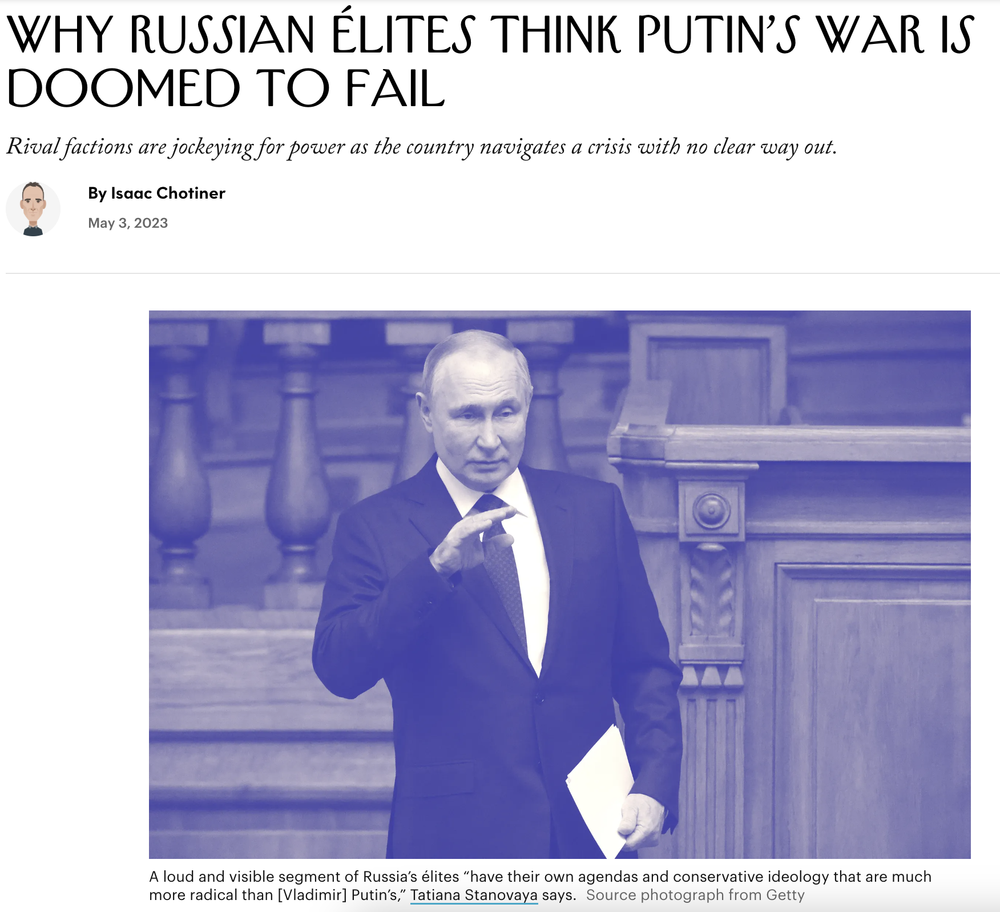

（AI編譯，原文：Why Russian Élites Think Putin’s War Is Doomed to Fail）

概要 Summary
Tatiana Stanovaya, a senior fellow at the Carnegie Russia Eurasia Center, has been analyzing how Russian politics have been shaped by the invasion of Ukraine. She argues that Putin’s regime may outlive him due to the drastic changes the war has brought to the domestic situation in Russia.
卡內基俄羅斯歐亞中心的高級研究員塔蒂亞娜·斯塔諾瓦亞一直在分析烏克蘭的入侵是如何塑造俄羅斯政治的。她認為，由於戰爭給俄羅斯的國內局勢帶來的劇變，普京的政權可能會比他本人更長壽。
Putin, once a strong leader with a clear plan, vision, and resources to secure the state’s stability, now appears misinformed and hesitant. He is failing to provide a reassuring strategy for how Russia will get out of this crisis.
曾經是一個有著清晰計劃、遠見和保障國家穩定的資源的強大領導者的普京，現在看起來信息不足，猶豫不決。他未能提供一個令人放心的策略，說明俄羅斯如何走出這場危機。
The overall feeling among Russian élites is that the attempts to win are doomed to fail. This sentiment is held not just by the élite, who view the war as a catastrophic mistake, but also those who believe that Ukraine does not exist as a state and must be “de-Nazified”—which, simply put, means become pro-Russian.
俄羅斯精英的總體感覺是，試圖贏得勝利的嘗試注定會失敗。這種情緒不僅僅是由精英們持有，他們認為戰爭是一個災難性的錯誤，還有那些認為烏克蘭並不存在作為一個國家，必須被「去納粹化」的人——簡單地說，就是變得親俄。
Putin is becoming too “insane” for the progressive-minded groups that understand the restrictions Russia will face, due to sanctions, on its technological and scientific development and too soft for those who believe that Russia must opt for total mobilization (militarily and economically) and bring all its might down on Ukraine.
對於那些理解俄羅斯將因制裁而面臨的技術和科學發展限制的開明思想團體來說，普京變得太「瘋狂」，而對於那些認為俄羅斯必須選擇全面動員（軍事和經濟）並將所有力量投入烏克蘭的人來說，他太過軟弱。
There is a growing deficit of Putin in Putin’s regime. If he does not retake the initiative, the next crisis the regime faces may cost him dearly.
普京的政權中普京的缺失正在增加。如果他不重新採取主動，那麼政權面臨的下一場危機可能會讓他付出慘重的代價。
Putin has allowed a certain amount of criticism of his policies from what might be called his right: the head of the Wagner Group, pro-war bloggers who want more ruthlessness against Ukraine, the security services, who want a stricter autocracy.
普京允許他的政策受到一定程度的批評，這可能被稱為他的右翼：瓦格納集團的頭，希望對烏克蘭更無情的親戰博客，安全服務，他們希望有更嚴格的專制。
原文 Original Article
For the past year, Tatiana Stanovaya, a senior fellow at the Carnegie Russia Eurasia Center, has been analyzing how Russian politics have been shaped by the invasion of Ukraine. Stanovaya has been explaining the Russian political environment to foreign audiences since 2018, when she founded R. Politik, a political-analysis firm, which is now in France. She has recently argued that stalled progress on the battlefield has led Russian élites to become increasingly disenchanted with Putin’s leadership.
在過去的一年里，卡內基俄羅斯歐亞中心的高級研究員塔蒂亞娜-斯坦諾瓦亞一直在分析俄羅斯政治是如何被入侵的烏克蘭所塑造的。自2018年以來，斯坦諾瓦亞一直在向外國聽眾解釋俄羅斯的政治環境，當時她成立了R.Politik，這是一家政治分析公司，現在在法國。她最近認為，戰場上的進展停滯不前，導致俄羅斯上層人士對普京的領導越來越不滿意。
I reached out to Stanovaya, who is more comfortable corresponding in English over e-mail; we exchanged several rounds of questions and answers. Our conversation, edited for length and clarity, is below.
我聯繫了斯坦諾瓦婭，她更願意通過電子郵件用英語交流；我們交換了幾輪問題和答案。以下是我們的對話，為保證長度和清晰度而進行了編輯。
In it, we discuss why Putin allows criticism of his policies from the nationalist right, what effective sanctions might actually accomplish, and what the meteoric rise of Yevgeny Prigozhin, the founder of the Wagner Group, explains about Putin’s Russia.
其中，我們討論了普京為何允許民族主義右派批評他的政策，有效的制裁實際上可能達到什麼效果，以及瓦格納集團的創始人葉夫根尼-普里戈津的飛速崛起對普京的俄羅斯有何解釋。
You recently wrote that Putin is more vulnerable than most people think. Why is that?
您最近寫道，普京比大多數人認為的更加脆弱。這是為什麼呢？
We tend to equate Putin’s regime with Putin himself. It is often heard that if Putin disappears, his regime will fall. However, I caution against this assumption, as the regime may prove to be more resilient, drawn-out, and potentially radical than Putin himself. It depends on the circumstances of Putin’s departure, but in my opinion his regime may outlive him. This is not just due to natural reasons related to age and health but also because of the way the war has drastically changed the domestic situation in Russia.
我們傾向於將普京的政權與普京本人等同起來。人們經常聽說，如果普京消失了，他的政權就會垮台。然而，我對這一假設提出警告，因為事實證明，該政權可能比普京本人更有彈性，更持久，更有可能更激進。這取決於普京離開的情況，但在我看來，他的政權可能會比他的壽命更長。這不僅僅是由於與年齡和健康有關的自然原因，也是由於戰爭極大地改變了俄羅斯的國內形勢。
Putin, who was once a strong leader with a clear plan, vision, and resources to secure the state’s stability, now appears misinformed, hesitant. He is failing to provide a reassuring strategy for how Russia will get out of this crisis. If Putin had conquered Ukraine in the first months of the war, there would be no questions. Not only did he fail but he created a crisis with no clear way out. I am not saying that he does not have a vision, but the way he interacts with the élites and deals with military defeats fuels uncertainty and anxiety about Russia’s future.
普京曾經是一個強有力的領導人，有明確的計劃、願景和資源來確保國家的穩定，現在卻顯得信息不暢，猶豫不決。他沒能為俄羅斯如何走出這場危機提供一個令人放心的戰略。如果普京在戰爭的頭幾個月就征服了烏克蘭，那就不會有問題了。他不僅失敗了，而且製造了一場沒有明確出路的危機。我並不是說他沒有遠見，但他與上層人士互動和處理軍事失敗的方式助長了對俄羅斯未來的不確定性和焦慮感。
This was particularly acute from September to February, when Ukraine conducted a successful counter-offensive in the Kharkiv region, and the West showed firm intentions to supply Ukraine with weapons. Putin responded with anti-Western invectives and threats, sometimes with nuclear hints, but without any explicit road map of practical steps. Today, uncertainty has decreased due to the protracted stabilization of the front line, and there is growing doubt about Ukraine’s capacity to strategically change the military situation and reclaim its invaded territories. However, the over-all feeling among Russian élites is that the attempts to win are doomed to fail. This sentiment is not just held by the élite, who view the war as a catastrophic mistake, but also those who believe that Ukraine does not exist as a state and must be “de-Nazified”—which, simply put, means become pro-Russian.
這種情況在9月至2月尤為嚴重，當時烏克蘭在哈爾科夫地區進行了一次成功的反攻，而西方也表現出向烏克蘭提供武器的堅定意圖。普京以反西方的謾罵和威脅作為回應，有時還帶有核暗示，但沒有任何明確的實際步驟的路線圖。今天，由於前線的長期穩定，不確定性已經減少，人們越來越懷疑烏克蘭是否有能力從戰略上改變軍事局勢，收回被入侵的領土。然而，俄羅斯上層人士的總體感覺是，爭取勝利的嘗試注定要失敗。持有這種情緒的不僅僅是那些認為戰爭是災難性錯誤的上層人士，還有那些認為烏克蘭並不作為一個國家存在，必須 “去納粹化”—簡單地說，就是變得親俄。
Putin is becoming too “insane” for the progressive-minded groups that understand the restrictions Russia will face, due to sanctions, on its technological and scientific development and too soft for those who believe that Russia must opt for total mobilization (militarily and economically) and bring all its might down on Ukraine. Moreover, within the latter segment, there is a growing part of the élite who believe it is already too late, that Russia will have to pause the war to launch radical internal reforms with total élite purges, property redistribution, and the imposition of state ideology so that it can return to the war in better shape.
對於那些瞭解俄羅斯因制裁而面臨的技術和科學發展限制的進步人士來說，普京正變得過於 “瘋狂”，而對於那些認為俄羅斯必須選擇全面動員（軍事上和經濟上）並將其全部力量用於烏克蘭的人士來說，普京則過於軟弱。此外，在後一部分人中，有越來越多的精英認為已經太晚了，俄羅斯將不得不暫停戰爭，啓動徹底的內部改革，對精英進行全面清洗，重新分配財產，並強制推行國家意識形態，以便它能夠以更好的狀態重返戰場。
Putin seems to be ignoring all of this. There is a growing deficit of Putin in Putin’s regime. If he does not retake the initiative, and I believe he will not because the situation to him seems not so bad, the next crisis the regime faces may cost him dearly.
普京似乎對這一切視而不見。在普京的政權中，普京的赤字越來越大。如果他不重新掌握主動權，而且我相信他不會，因為對他來說情況似乎並不糟糕，那麼該政權面臨的下一次危機可能會讓他付出沈重的代價。
Putin has allowed a certain amount of criticism of his policies from what might be called his right: the head of the Wagner Group, pro-war bloggers who want more ruthlessness against Ukraine, the security services, who you say in your piece want a stricter autocracy. Why?
普京允許來自可能被稱為他的右翼的人對他的政策進行一定程度的批評：瓦格納集團的負責人、希望對烏克蘭採取更多無情手段的支持戰爭的博主、安全部門，你在文章中說他們希望有更嚴格的專制。為什麼？
One of Putin’s main features, which we should not overlook, is his sincere belief in his historical “mission.” This means that his moves are not always about situational political maneuvering but sometimes about his conviction that he serves the state that he cultivates. It may seem to the Western audience that I am justifying or sympathizing with Putin, but, as an analyst, I try to understand the internal incentives, motivation, and logic of political figures. Whether we like it or not, Putin believes that he serves Russia’s national interests, even if the way he does it harms Russia more than it helps.
普京的主要特點之一，我們不應忽視，就是他對自己的歷史 “使命 “的真誠信念。這意味著，他的舉動並不總是出於情勢上的政治操縱，有時是出於他的信念，即他為自己培養的國家服務。在西方觀眾看來，我似乎是在為普京開脫或同情他，但是，作為一個分析家，我試圖瞭解政治人物的內部動機、動力和邏輯。無論我們喜歡與否，普京認為他是為俄羅斯的國家利益服務的，即使他的方式對俄羅斯的傷害比幫助更大。
Through this prism, he makes a clear distinction between a right and good opposition and a destructive and hostile opposition. If we look objectively, Yevgeny Prigozhin, with all his public activities during the year, has politically damaged the regime perhaps much more than Alexey Navalny, the jailed opposition leader, has. Prigozhin is much more politically dangerous. He has split élites, attacked the pillars of the regime, such as the army, and challenged Putin’s appointees, and even the Presidential administration, using his own armed militias, and his media allies. He has a much more radical agenda than is usually allowed to spread in the informational space.
通過這個稜鏡，他明確區分了正確和良好的反對派與破壞性和敵對性的反對派。如果我們客觀地看，葉夫根尼-普里戈津在這一年中的所有公開活動，在政治上對政權的損害可能比被監禁的反對派領導人阿列克謝-納瓦爾尼要大得多。普里戈津在政治上更加危險。他利用自己的武裝民兵和媒體盟友，分裂了精英階層，攻擊了軍隊等政權的支柱，挑戰了普京的任命，甚至是總統府。他有一個比通常允許在信息空間傳播的更激進的議程。
And yet, he remains untouchable, thanks only to Putin personally.
然而，他仍然是不可觸及的，這僅僅是由於普京個人。
The main difference between Navalny and Prigozhin, in Putin’s eyes, is that the former has destructive intentions to ruin Russia and is often used as a tool in the hands of Russia’s strategic enemies—the West. Prigozhin, however destructive he may appear, is guided by pro-Russian priorities and best wishes. In other words, Putin sees Navalny as a betrayer and Prigozhin as a genuine patriot. The same is true of all the radically pro-war public on social networks.
在普京眼裡，納瓦爾尼和普里戈津的主要區別在於，前者有破壞性的意圖，想毀掉俄羅斯，並經常被俄羅斯的戰略敵人—西方國家當作工具來使用。普利高津，無論他看起來多麼具有破壞性，都是以親俄羅斯的優先事項和良好願望為指導。換句話說，普京認為納瓦爾尼是一個背叛者，而普里戈津是一個真正的愛國者。社交網絡上所有激進的親戰公眾也是如此。
The problem is that it is only Putin who sees things this way. For a significant part of the Russian mainstream élite, Prigozhin, together with “angry patriots,” as domestic-policy overseers in the Kremlin call them, represent a genuine threat that needs to be curtailed. This is another division between Putin and the élites. Many in the leadership believe that Prigozhin is dangerous for the regime, from technocrats who are just horrified by him, to the F.S.B., which consider him a threat. Yet Putin allows him to be. I would not exaggerate the level of Putin’s positive attitude toward Prigozhin, but he sees him as a genuine hero who is sometimes clumsy and goes too far, and needs to be reined in due to his often-emotional outbursts. But he is not an enemy, and deserves to have his own place in the system, regardless of what others think.
問題是，只有普京這樣看問題。對於俄羅斯主流精英階層的很大一部分人來說，普里戈津和克里姆林宮的國內政策監督者所說的 “憤怒的愛國者 “一起，代表著真正的威脅，需要加以遏制。這是普京和上層人士之間的另一個分歧。領導層中的許多人認為普里戈津對政權是危險的，從對他感到恐懼的技術官僚到認為他是威脅的F.S.B.。但普京卻允許他這樣做。我不會誇大普京對普里戈津的積極態度，但他認為普里戈津是一個真正的英雄，他有時很笨拙，走得太遠，由於他經常情緒失控，需要加以約束。但他不是敵人，不管別人怎麼想，他應該在體制內有自己的位置。

In March, there emerged what appeared to be a leaked phone call between Russian élites complaining about Putin. You recently wrote that “the affair has underscored two conflicting trends among Russia’s élites. The first is growing alarm and despair, and a sense that Putin is leading the country over a precipice to imminent doom. The second is the rising stock of the country’s repressive apparatus and the patriotic bloc, which is baying for blood ever more loudly, with its calls for purges and even greater turning of the screws.” How would you describe these blocs and what they want? How do they differ from Putin ideologically?
3月，出現了似乎是俄羅斯上層人士之間抱怨普京的洩露的電話。你最近寫道：”這一事件突出了俄羅斯精英階層中兩種相互衝突的趨勢。首先是越來越多的驚慌和絕望，感覺普京正在帶領這個國家越過懸崖，走向即將到來的厄運。第二種是國家的鎮壓機器和愛國集團不斷增加，他們更加大聲地叫囂著流血，呼籲進行清洗和更大程度地轉動螺絲。”您如何描述這些集團以及他們想要什麼？他們在意識形態上與普京有什麼不同？
This division between what I call technocrats and patriots is very conditional but helps to display a larger picture of what is going on in the Russian élite. The first trend is composed of technocrats, civic senior officials, and most of the regional governors, who can only passively observe what is going on. They silently—or sometimes with necessary, ostentatious patriotism—execute Putin’s orders, without being allowed to discuss strategic-level politics, geopolitics, or foreign affairs. They do not have their own agenda, ideological vision, or ambitions. They are very pragmatic and would not play a hero, often preferring to adapt and mimic the environment.
我所說的技術官僚和愛國者之間的這種劃分是非常有條件的，但有助於展示俄羅斯上層社會正在發生的更大的情況。第一個趨勢是由技術官僚、公民高級官員和大多數地區長官組成，他們只能被動地觀察正在發生的事情。他們默默地—或有時帶著必要的、浮誇的愛國主義—執行普京的命令，不允許討論戰略層面的政治、地緣政治或外交事務。他們沒有自己的議程、意識形態願景或野心。他們非常務實，不會扮演英雄，往往喜歡適應和模仿環境。
The second segment, which we can call “patriots,” represents a visible and sometimes loud mainstream. They have their own manifold agendas and conservative ideology that are much more radical than Putin’s. We are talking about the heads of the security services; United Russia, the ruling party; those mentioned above, such as Prigozhin; and military correspondents. Unlike the first segment, they have their own diverse recipes for how to get out of the crisis, how to deal with Ukraine, and how to arrange things in domestic policy and the economy. Many of them stand for martial law, total mobilization, putting the economy on a war footing, and a harsher approach to internal “enemies” and “traitors.” Many of them are simply opportunists, existing only to please Putin, guess and meet his needs, and demonstrate their political value.
第二部分，我們可以稱之為 “愛國者”，代表了一個明顯的、有時是響亮的主流。他們有自己多方面的議程和保守的意識形態，比普京的要激進得多。我們說的是安全部門的負責人；執政黨 “統一俄羅斯”；上面提到的那些人，如普里戈津；以及軍事記者。與第一部分不同的是，他們對如何擺脫危機、如何處理烏克蘭問題以及如何安排國內政策和經濟方面的事情都有自己不同的方案。他們中的許多人主張戒嚴、全面動員、將經濟置於戰爭狀態，以及對內部 “敵人 “和 “叛徒 “採取更嚴厲的做法。他們中的許多人只是機會主義者，他們的存在只是為了取悅普京，猜測和滿足他的需求，並展示他們的政治價值。
They are incrementally dragging the country into a more repressive state. The radicalization of domestic policy gains its own momentum and has not been deliberately organized from a single, united center of decision-making. This has even become a headache for domestic-policy overseers who have to figure out how to hold down “patriots” and lower their eagerness. All this repression and tightening of screws that we saw before and especially during the war are the result of internal bureaucratic and political cacophony. There isn’t a particular decision-making center in the hypothetical “Kremlin” where a limited group of people meet to decide in advance who to prosecute, sentence, or arrest. Instead, this repressive process is decentralized, involving many players—although with a dominant role for the F.S.B. Most high-profile cases are of course to be agreed with Putin (who is usually informed after the fact), but not all the cases. This trend has gained momentum and is progressing independently of Putin’s intentions, which are in any case pro-repression, particularly as he delegates these decisions.
他們正逐步將國家拖入一個更加壓抑的狀態。國內政策的激進化獲得了自己的動力，並沒有刻意從一個單一的、統一的決策中心組織。這甚至已經成為國內政策監督者的頭疼問題，他們必須想辦法壓制 “愛國者”，降低他們的急切性。我們在戰前，尤其是在戰爭期間看到的所有這些壓制和緊箍咒都是內部官僚和政治喧囂的結果。在假設的 “克里姆林宮 “中，並沒有一個特定的決策中心，在那裡，有限的一群人開會，事先決定起訴、判刑或逮捕誰。相反，這種鎮壓過程是分散的，涉及許多參與者—儘管聯邦安全局起著主導作用。大多數引人注目的案件當然要與普京商定（他通常在事後被告知），但不是所有的案件。這一趨勢已經取得了勢頭，並在獨立於普京的意圖之外取得進展，而普京的意圖在任何情況下都是支持壓制的，特別是在他授權這些決定的時候。
This may create an impression of a well-managed policy, but only due to the fact that it moves in the same direction. Here is an example: last year, Prigozhin persuaded Putin to allow the recruitment of prisoners to fight in the war. The decision was taken without due analysis and consultation with other bodies. Putin instructed his administration to assist Prigozhin, to open the doors to the prisons for him. This caused outrage among several bodies, including the Justice Ministry, which was formally responsible for the penitentiary system, the Prosecutor General’s office, and the F.S.B. All of them had spent years imprisoning criminals who were now being passed into the hands of an unmanageable “private businessman” with his own army and weapons. There was a risk that they could turn up on the Russian streets in six months like nothing had happened. It took several months to persuade Putin to stop this practice and to pass the job of recruitment to the Defense Ministry, which now operates in prisons much more selectively.
這可能會給人一種管理良好的政策印象，但只是由於它朝著同一個方向發展。這裡有一個例子：去年，普里戈津勸說普京允許招募囚犯參戰。這個決定是在沒有適當分析和與其他機構協商的情況下做出的。普京指示他的政府協助普里戈津，為他打開監獄的大門。這引起了一些機構的憤怒，包括正式負責監獄系統的司法部、總檢察長辦公室和F.S.B.，他們都花了多年時間監禁罪犯，現在卻被移交給一個擁有自己的軍隊和武器的無法管理的 “私人商人”。他們有可能在六個月後出現在俄羅斯的街頭，就像什麼都沒發生過一樣。花了幾個月的時間說服普京停止這種做法，並將招募工作交給國防部，國防部現在更有選擇性地在監獄中運作。
This shows how this part of the élite, the “patriots,” who want Russia to win in Ukraine, have contradictory approaches and visions for how and at what price the state can do it. But these two segments, “technocrat-executors” and “patriots,” have a common ground—they share the feeling that Putin’s political behavior, against the backdrop of the war, is not adequate to the challenges that Russia is facing.
這表明，希望俄羅斯在烏克蘭取得勝利的這部分精英，即 “愛國者”，對於國家如何以及以何種代價取得勝利，有著相互矛盾的方法和願景。但這兩部分人，”技術官僚-執行者 “和 “愛國者”，有一個共同點—他們都覺得普京在戰爭背景下的政治行為不足以應對俄羅斯面臨的挑戰。
At least according to the limited public-opinion data we have, these concerns about Putin are not shared by the Russian public. Why do you think this élite concern about Putin has not trickled down, if you believe that the surveys are accurate?
至少根據我們掌握的有限的民意數據，俄羅斯公眾對普京的這些擔憂並不認同。如果您相信這些調查是準確的，你認為為什麼這種上層人士對普京的擔憂沒有流傳下來?
Despite concerns that we cannot truly gauge opinions in Russia, as individuals may hide their sentiments due to fear or dishonesty, I believe that we still have access to relatively accurate sociological data. This data is provided by independent pollsters such as the Levada Center. Their findings generally align with the data from state-controlled pollsters. As a result, we have a picture of Russian society that is predominantly pro-war, loyal to the authorities, and far from protesting. However, this is not necessarily due to positive support for Putin but, rather, a rational choice to lean on the state as the most capable political institution to protect against perceived external threats that a significant portion of Russian society believes are out to destroy Russia.
儘管有人擔心我們無法真正衡量俄羅斯的意見，因為個人可能因為恐懼或不誠實而隱藏自己的情緒，但我認為我們仍然可以獲得相對準確的社會學數據。這些數據是由獨立的民調機構，如列瓦達中心提供的。他們的調查結果通常與國家控制的民調機構的數據一致。因此，我們得到的俄羅斯社會圖景主要是支持戰爭，忠於當局，而遠離抗議活動。然而，這並不一定是由於對普京的積極支持，而是一種理性的選擇，即依靠國家這個最有能力的政治機構來保護自己免受所認為的外部威脅，而俄羅斯社會的很大一部分人認為這些威脅是要摧毀俄羅斯。
The difference between society and the élite is that élites are more directly involved in the war, either as subjects of sanctions, participants in decision-making, or by allocating resources to war efforts. The cost of military defeat would be devastating for them. In contrast, society as a whole has less to lose and is more fearful of a potential nato military attack than a Russian defeat in the war, although the two are related. While the élites view defeat as a direct threat to their personal security—with many potentially being considered accomplices of war crimes—and their future, society was largely removed from the military agenda and decision-making process, at least before the September mobilization.
社會和貴族之間的區別在於，貴族更直接地參與到戰爭中，或者作為制裁的對象，參與決策，或者為戰爭工作分配資源。軍事失敗的代價對他們來說將是毀滅性的。相比之下，整個社會的損失較小，對北約潛在的軍事攻擊比對俄羅斯在戰爭中的失敗更為恐懼，儘管這兩者是相關的。雖然上層人士認為失敗是對他們個人安全的直接威脅—許多人有可能被視為戰爭罪的幫凶—以及他們的未來，但至少在9月動員之前，社會在很大程度上脫離了軍事議程和決策過程。
Now, as the Kremlin increasingly adopts a public strategy of portraying Russia as a victim, the greater the perceived external threat, the more societal support the authorities will receive. The Kremlin effectively exploits these fears by promoting an ultra-patriotic state ideology, a cult of state, and by reintroducing elements of Soviet ideology and institutions. This leads to an increase in mass denunciations and an atmosphere of intolerance toward any hint of anti-war sentiment.
現在，隨著克里姆林宮越來越多地採取將俄羅斯描繪成受害者的公開策略，人們認為的外部威脅越大，當局就越能獲得社會支持。克里姆林宮通過宣傳極端愛國的國家意識形態、國家崇拜，以及重新引入蘇聯意識形態和體制的元素，有效地利用了這些恐懼。這導致了大眾譴責的增加和對任何反戰情緒暗示的不容忍氣氛。
This trend also signifies a creeping militarization of society, which in turn intimidates the élites and leaves no room for any form of disagreement. In my view, the problem with the Russian regime is not that it may collapse from within but that it could transform into something monstrous—ruthless, inhumane, with pervasive digital control and a reign of fear. This is because the price of conceding, especially for élites, would mean the end of Russia as it is currently known.
這種趨勢也標誌著社會的軍事化正在悄悄進行，這反過來又恐嚇了上層人士，使任何形式的分歧都沒有空間。在我看來，俄羅斯政權的問題不在於它可能從內部崩潰，而在於它可能轉變為某種畸形的東西—無情的、不人道的、普遍的數字控制和恐懼的統治。這是因為，讓步的代價，尤其是對上層人士而言，將意味著目前所知的俄羅斯的終結。
You have referred to Putin as “misinformed” and “hesitant.” And you have said that he finds the current situation “not so bad.” Elsewhere we have read about how isolated he is. Why do you think he is failing to reassure élites, and why is he unable to get good information?
您提到普京是”消息不靈通”和”猶豫不決”。您還說，他認為目前的情況”不那麼糟糕”。在其他地方，我們讀到了他是如何被孤立的。您認為他為什麼不能讓上層人士放心，以及他為什麼不能獲得好的信息？
We should differentiate between two things here. Firstly, how Putin appears to élites, and secondly, how well-informed he truly is. He appears misinformed and hesitant to many in the Russian élite, including high-profile bureaucrats. However, the situation is more complex. While it is true that Putin’s preparation for war and the assumptions made by him and the decision-makers were deeply flawed and erroneous, he is a fast learner. But his awareness is not always consistent and a lot depends on the subject.
在這裡，我們應該區分兩件事。首先，普京在上層人士眼裡是怎樣的，其次，他真正瞭解的情況如何。在俄羅斯上層社會的許多人看來，他似乎信息不靈，猶豫不決，包括高調的官僚。然而，情況更為複雜。雖然普京的戰爭準備以及他和決策者的假設確實有很大的缺陷和錯誤，但他是一個快速學習者。但他的認識並不總是一致的，而且很多時候取決於主題。
Regarding the economic issues—something he has always found boring and willingly delegates—he has been overly optimistic, even inspired by the prospect of an economic breakthrough, while underestimating long-term risks. He also believes that people genuinely love and support him, sharing his main narratives, even though this support is, as I mentioned earlier, more rational and calculated. In Russia, one can often hear something like, “Putin is a corrupt thief, but we will deal with him after the war; now is not the time for political disputes.” Another example: Putin genuinely believes Russia has many friends among Western élites and societies, as well as in the anti-American world. He thinks the world is on the verge of a major shift, with the current international order about to collapse.
關於經濟問題—他一直覺得很無聊，並心甘情願地委託他人處理—他一直過於樂觀，甚至被經濟突破的前景所鼓舞，而低估了長期風險。他還認為，人們是真心愛戴和支持他，認同他的主要敘事，儘管這種支持正如我前面提到的，更多的是理性和計算。在俄羅斯，人們經常可以聽到這樣的話：”普京是個腐敗的小偷，但我們會在戰後處理他；現在不是政治糾紛的時候”。另一個例子：普京真正相信俄羅斯在西方精英和社會中，以及在反美世界中擁有許多朋友。他認為，世界正處於重大轉變的邊緣，目前的國際秩序即將崩潰。
Putin can be adaptive and mindful; he knows when to wait, calculate, and make measured decisions. He still has access to objective information, albeit sometimes with significant delays. The problem with Putin is that he has developed powerful filters over time, a belief-system fortress that naturally determines who can reach him and what information can permeate. He self-censors due to his beliefs, causing his inner circle to self-censor, too, to avoid negative feedback. The only mechanism that still effectively provides alternative information is internal conflicts: the F.S.B. denounces the Defense Ministry and figures like Prigozhin; Prigozhin denounces military figures; the Federal Protective Service denounces the F.S.B., and so on. There is no centralized system of information delivery, but as long as people can still reach Putin to complain about their opponents, he will be relatively informed.
普京能夠適應和注意；他知道何時等待、計算和做出有分寸的決定。他仍然有機會獲得客觀信息，儘管有時會有明顯的延遲。普京的問題是，隨著時間的推移，他已經形成了強大的過濾器，這是一個信念系統的堡壘，自然決定了誰可以接觸到他，什麼信息可以滲透進來。由於他的信念，他進行自我審查，導致他的內部圈子也進行自我審查，以避免負面反饋。唯一還能有效提供替代信息的機制是內部衝突：聯邦安全局譴責國防部和普里戈津等人物；普里戈津譴責軍方人物；聯邦保護局譴責聯邦安全局，等等。雖然沒有集中的信息傳遞系統，但只要人們還能聯繫到普京，抱怨他們的對手，他就會相對知情。
However, this doesn’t necessarily lead to high-quality decision-making; it’s more like a seesaw. At one point, Prigozhin succeeds in delivering information and gains Putin’s favor, which contributed to Sergey Surovikin’s appointment to lead the war effort last fall. Then, it’s Valery Gerasimov’s turn—and Surovikin got demoted.
然而，這並不一定導致高質量的決策；它更像是一個蹺蹺板。有一次，普里戈津成功地提供了信息，並獲得了普京的青睞，這有助於謝爾蓋-蘇羅維金在去年秋天被任命為戰爭工作的領導。然後，輪到瓦列里-格拉西莫夫了—蘇洛維金被降職。
Putin has become quite ineffective at collective decision-making, having grown accustomed to assigning tasks to specific confidants who avoid collaborating with others. This results in flawed and inefficient implementation. He is becoming less isolated than we previously thought—the frequency of his meetings and trips has increased significantly. However, every public move is now staged to cater to Putin’s feelings and beliefs, so even when he ventures out, he only sees what he wants to see. Even if Putin tries to escape his isolation, the system in which he functions as a political figure has been growing increasingly closed, stewing in its own juice, and feeding his most distorted illusions. Over time, and as he ages, this will deteriorate dramatically. In previous years, élites struggled to gain access to Putin, but now they would rather avoid crossing him, viewing his personal involvement as more of a problem than a solution.
普京在集體決策方面已經變得相當低效，他已經習慣於將任務分配給避免與他人合作的特定知情人。這導致了有缺陷和低效率的執行。他變得不像我們之前想象的那樣孤立無援—他的會議和旅行的頻率大大增加。然而，現在的每一次公開行動都是為了迎合普京的感受和信仰而進行的，所以即使他冒險出去，也只能看到他想看到的東西。即使普京試圖擺脫自己的孤立狀態，他作為政治人物發揮作用的系統也越來越封閉，在自己的汁液中燉煮，並餵養他最扭曲的幻想。隨著時間的推移，以及他年齡的增長，這種情況將急劇惡化。前些年，精英們努力爭取與普京接觸，但現在他們寧願避免與普京接觸，認為他的個人參與是一個問題而不是一個解決方案。
Can you talk a little bit about how you gather information and do your work?
您能談一談你是如何收集信息和開展工作的嗎？
This is a very understandable question, especially considering that I have been living abroad for a long time. I moved from Russia in 2010, and at that time, I was working at the Center for Political Technologies, one of the oldest think tanks in Russia, where I stayed until 2018. So, I was among the relatively few people who began working remotely long before the covid pandemic made it commonplace. The development of social networks has made it increasingly common and natural to stay in touch with people thousands of kilometres away. Moreover, social networks are not only about personal contacts but they also steadily replace traditional media, especially when it comes to Russia. You can find tons of exclusive, authentic sources, as well as discussions and opinions with a relatively low level of censorship, in the Russian political segment of Telegram. There are ultra-patriots and war correspondents who provide information on military matters, liberal-minded media, prominent experts, journalists, and politicians. People talk a lot, and the Kremlin, at least for now, allows Telegram to function because it has become a platform of intra-élite communications, including within the Kremlin itself. There are also many official and semi-official Telegram channels, which may not be very popular but publish documents, participate in discussions, and provide the opportunity to ask questions. So, ninety to ninety-five per cent of the information comes from open sources.
這是一個非常容易理解的問題，特別是考慮到我已經在國外生活了很長時間。我在2010年從俄羅斯搬來，當時我在政治技術中心工作，這是俄羅斯最古老的智庫之一，我在那裡一直待到2018年。所以，我是相對較少的人之一，早在covid大流行使之成為普遍現象之前就開始遠程工作。社交網絡的發展使得與幾千公裡外的人保持聯繫變得越來越普遍和自然。此外，社交網絡不僅是個人聯繫，而且還穩步取代了傳統媒體，特別是在涉及到俄羅斯的時候。在Telegram的俄羅斯政治板塊中，你可以找到大量獨家、真實的消息來源，以及審查程度相對較低的討論和意見。這裡有提供軍事信息的極端愛國者和戰地記者，有思想自由的媒體，有著名專家、記者和政治家。人們議論紛紛，克里姆林宮至少在目前允許Telegram運作，因為它已經成為一個內部交流的平台，包括克里姆林宮內部。還有許多官方和半官方的Telegram頻道，它們可能不是很受歡迎，但會發佈文件，參與討論，並提供提問的機會。因此，百分之九十到九十五的信息都來自於公開渠道。
As for inside information, it is a highly contradictory question when it comes to Russian politics. On one hand, I have a sort of privilege—I am not considered a journalist in Russia, and I’m not one. Also, I am not perceived as being anti- or pro-Putin, so the authorities, or people close to them, can talk to me without fearing that it will be used against them or published somewhere. Especially with the war, high-profile figures in Russia have practically stopped talking to anyone from “hostile” organizations, such as opposition-minded media. I always say that the goal is not exclusive information but understanding. My primary intention and core principle is to remain objective and cultivate a cold-blooded attitude toward political figures. I know that it often angers those who are anti-Putin and who may consider my approach a way to justify Russian decision-making, but, for me, there are no “bad guys” or “good guys,” because there is no political agenda behind my research.
至於內部信息，當涉及到俄羅斯政治時，這是一個非常矛盾的問題。一方面，我有一種特權—在俄羅斯我不被認為是記者，我也不是。另外，我不被認為是反普京或親普京的人，所以當局或與他們關係密切的人可以與我交談，而不用擔心會被用來對付他們或在什麼地方發表。特別是隨著戰爭的發生，俄羅斯的高調人物實際上已經不再與來自 “敵對 “組織的任何人交談，例如具有反對派思想的媒體。我總是說，目標不是獨家信息，而是理解。我的主要意圖和核心原則是保持客觀，培養對政治人物的冷血態度。我知道這常常激怒那些反普京的人，他們可能認為我的方法是為俄羅斯的決策辯護，但是，對我來說，沒有 “壞人 “或 “好人”，因為我的研究背後沒有政治議程。
The biggest problem with insiders is not how to reach them or make them talk; the problem is the nature of decision-making in Putin’s regime. Only very few, and always different, people know something about upcoming political or geopolitical decisions. You could have a great friendship with Mikhail Mishustin, the Russian Prime Minister, but if you asked him in the first days of January, 2020, when he headed the federal taxation service, whether Putin was preparing for a government reshuffle with Dmitry Medvedev’s removal, he would never confirm it. You could be the closest confidant of Sergey Lavrov, Russia’s foreign minister, but you would never get confirmation from him about Putin preparing to launch the war against Ukraine, because Lavrov simply wasn’t informed.
內部人士的最大問題不是如何接觸他們或讓他們說話；問題是普京政權的決策性質。只有極少數人，而且總是不同的人，知道一些關於即將到來的政治或地緣政治的決定。你可以和俄羅斯總理米哈伊爾-米蘇斯廷有很好的友誼，但如果你在2020年1月的頭幾天問他，當他領導聯邦稅務局時，普京是否準備隨著德米特里-梅德韋傑夫的去職進行政府改組，他永遠不會確認。你可以是俄羅斯外交部長謝爾蓋-拉夫羅夫最親密的知己，但你永遠不會從他那裡得到關於普京準備對烏克蘭發動戰爭的確認，因為拉夫羅夫根本不知道。
Access to insiders in Russia is more about subjective things, such as élite sentiments, expectations, hopes, and fears. With the war, the intensity of contacts has increased, as people have a growing number of questions about what is going on, and, simultaneously, shrinking access to the external world. There are far fewer foreign trips, if any, and very limited contacts with Westerners, and a growing hunger for alternative information that is neither “patriotic” nor oppositional, but simply objective.
在俄羅斯接觸內部人士更多的是主觀的東西，如上層人士的情緒、期望、希望和恐懼。隨著戰爭的發生，接觸的強度增加了，因為人們對發生的事情有越來越多的疑問，同時，對外部世界的接觸也在縮小。如果有的話，外國旅行也少得多，與西方人的接觸也非常有限，人們越來越渴望獲得既不 “愛國 “也不反對的另類信息，而僅僅是客觀的。
The Wall Street Journal recently reported that sanctions may finally be hurting the regime. Is that your sense?
《華爾街日報》最近報道說，制裁可能最終會傷害到該政權。這是您的感覺嗎？
This is one of the most contradictory questions an expert has to hear, as it often implies wishful thinking, politics, and activism, rather than objective analysis. As a non-economist, I look at things from a political perspective. Currently, sanctions are consolidating élites rather than hurting them, and the same is true for society. In private conversations, ordinary Russians often express negative attitudes toward Putin, but when it comes to the war, they say that we must put aside our disagreements and stand together to face the external threat aimed at destroying their country. The rallying around the flag has kept the authorities’ approval ratings and support for the war consistently high.
這是一個專家必須聽到的最矛盾的問題之一，因為它往往意味著一廂情願、政治和行動主義，而不是客觀分析。作為一個非經濟學家，我從政治角度看問題。目前，制裁正在鞏固精英階層，而不是傷害他們，社會也是如此。在私下交談中，普通俄羅斯人經常對普京表達負面態度，但當涉及到戰爭時，他們說我們必須拋開分歧，團結起來面對旨在摧毀他們國家的外部威脅。圍繞國旗的集會使當局的支持率和對戰爭的支持率持續走高。
My colleagues and friends who often visit Moscow (unfortunately, I can’t take that risk, but my family is there) say that people are living as usual, and it seems like nothing has changed. Restaurants are open, shops are well-stocked, and there are choices. However, the atmosphere is extremely heavy and grim. While I acknowledge that sanctions are having an effect, they are not functioning as expected. One should not count on a coup, the rise of anti-Putin opposition, or the appearance of anti-war sentiments. Instead, the sanctions will push the regime to transform itself into its darkest state, create grounds for miscalculations, and decrease the competency of the bureaucracy, leading to irrational, mistaken choices. Together with the impossibility of winning the war as planned in the beginning, sanctions doom the regime to end badly.
我的同事和經常訪問莫斯科的朋友（不幸的是，我不能冒這個險，但我的家人在那裡）說，人們照常生活，似乎沒有什麼變化。餐館在營業，商店的貨物充足，而且有選擇。然而，氣氛是極其沈重和灰暗的。雖然我承認制裁正在產生影響，但它們並沒有像預期那樣發揮作用。人們不應指望發生政變，反普京的反對派崛起，或出現反戰情緒。相反，制裁將推動政權轉變為最黑暗的狀態，為誤判創造理由，並降低官僚機構的能力，導致非理性的錯誤選擇。再加上不可能像一開始計劃的那樣贏得戰爭，制裁注定了該政權會有糟糕的結局。
I understand that you may ask how and when, but I don’t have an answer. It could take a long time, with a slow transition from Putin’s regime to institutional Putinism-without-Putin until the first serious internal crisis. There are many scenarios for how the situation may develop, including the speed of changes, the level of violence, or the nature of upheaval (whether it will come from élites or society). However, the current sanctions provide no path for this type of regime to turn back, to stop the war or consider genuine peace talks; it can only lead to further domestic degradation. It’s not so much about the emergence of anti-Putin opposition as it is about the deterioration of decision-making quality and self-destruction. But even in this regard, one should not be too optimistic, as the regime is quick to learn from its mistakes and adapt to unforeseen consequences. ♦
我明白，你可能會問如何和何時，但我沒有答案。這可能需要很長的時間，從普京的政權慢慢過渡到沒有普京的體制性普京主義，直到第一次嚴重的內部危機發生。局勢的發展有很多情況，包括變化的速度、暴力的程度或動亂的性質（是否來自精英階層或社會）。然而，目前的制裁沒有為這種類型的政權提供回頭路，停止戰爭或考慮真正的和平談判；它只能導致國內的進一步墮落。與其說是出現了反普京的反對派，不如說是決策質量的惡化和自我毀滅。但即使在這方面，人們也不應過於樂觀，因為該政權很快就會從錯誤中吸取教訓，並適應不可預見的後果。♦
WSJ Documentary: Inside Prigozhin’s Wagner, Russia’s Secret War Company
WSJ紀錄片《瓦格納和普里戈津的前生今世》| 中文字幕版 ：
微博（@水山水山水山）：微博 (weibo.cn)
Bilibili轉載：https://www.bilibili.com/video/BV1Fz4y1p7u2
Youtube轉載：https://youtu.be/09ktOO-AWW8
Zelenskyy: Masters of Russia “control nothing”
We all remember how the head of Russia threatened the world in 2021. He had some ultimatums, he was trying to show a kind of strength...
— Володимир Зеленський (@ZelenskyyUa) June 24, 2023
The year 2022 showed that he confused – confused his illusions and the lies he was fed with strength. They in the Kremlin are capable of… pic.twitter.com/rwOhLvQJAF
我們都記得俄羅斯首腦在2021年是如何威脅世界的。他有一些最後通牒，他試圖展示一種力量……
2022年表明，他混淆了—混淆了他的幻想和他被灌輸的謊言與力量。克里姆林宮的人能夠訴諸任何恐怖，能夠訴諸任何愚蠢，但他們不能提供哪怕是百分之一的必要控制。而他們就是問題所在。
在一天之內，他們失去了他們一百多萬個城市中的幾個，並向所有俄羅斯土匪、雇傭兵、寡頭和其他任何人展示了佔領俄羅斯城市和可能的武器庫有多麼容易。
現在，非常重要的是，世界上沒有人因為害怕俄羅斯的這種混亂而保持沈默。現在領導人的所有行動都可以成為歷史。記者們的每一句話都是有價值的。有必要明確指出問題的根源。而如果世界上有人試圖忽視這種情況，如果世界上有人幻想克里姆林宮有能力重新獲得控制權……這只能將問題推遲到下一次混亂的突破口—甚至更加危險。
我們都知道解決辦法。
如果您喜欢此博客或发现它对您有用，则欢迎对此发表评论。 也欢迎您共享此博客，以便更多人可以参与。 如果博客中使用的图像侵犯了您的版权，请与作者联系以将其删除。 谢谢 ！